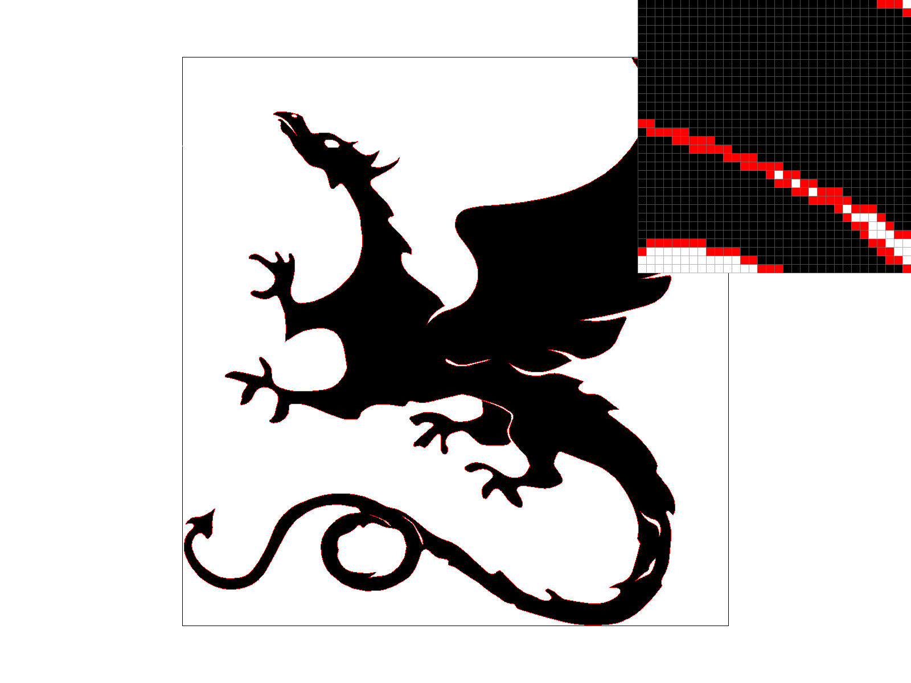
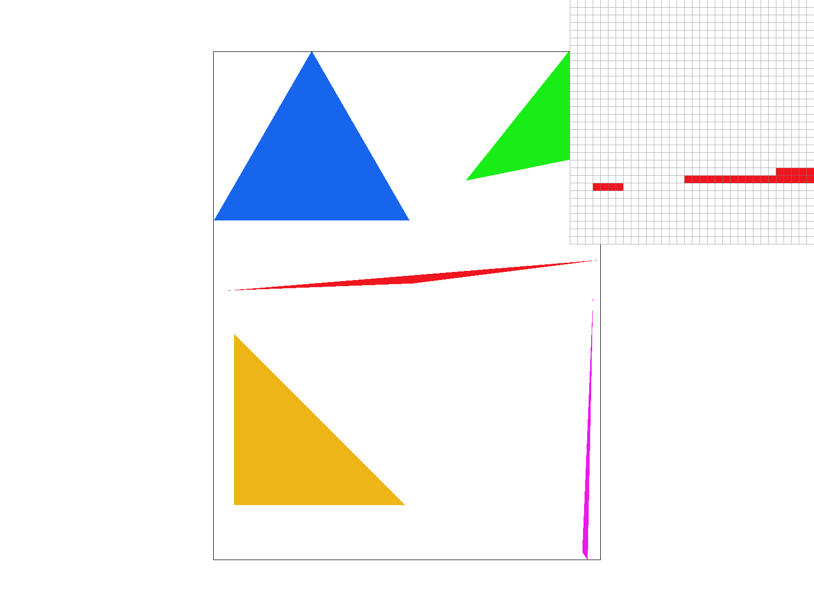
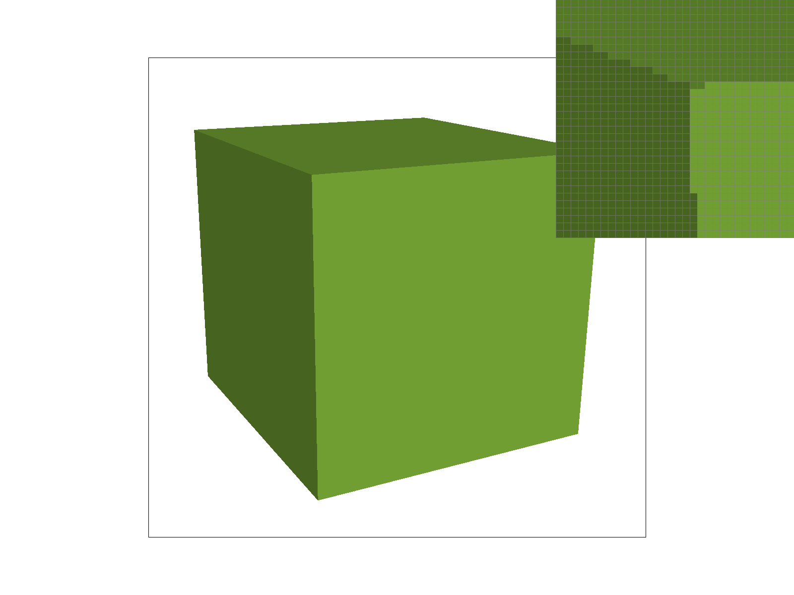
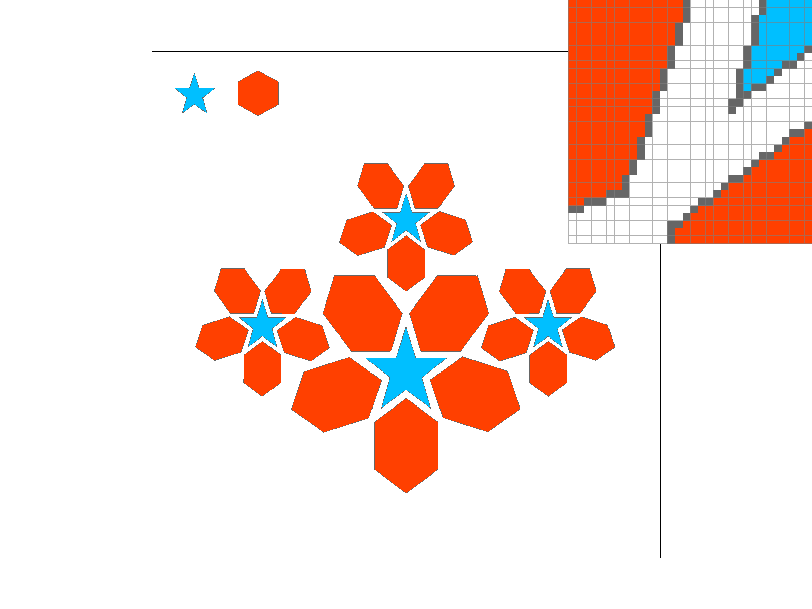

CS184/284A Spring 2025 Homework 1 Write-Up
Link to webpage here.
Link to GitHub repository here.

Overview
This work develops a simple rasterizer, a solution to aliasing with super sampling, some rotation/translation transforms, and different sampling techniques for texture mapping. We compare the effects of supersampling rates of 1, 4, 9, and 16 samples per pixel on antialiasing, where a higher supersampling rate corresponds to better antialiasing performance (i.e. less "jaggies"). We also implement bilinear and nearest pixel sampling techniques for texture mapping, which utilizes a barycentric coordinate transformation - quite literally - behind the scenes. We combine these pixel sampling techniques with zero, nearest, and linear level sampling techniques with mipmaps to reduce aliasing for "distant" artifacts in a scene.Task 1: Drawing Single-Color Triangles
The concept of rasterization is to simply draw a continuous vector graphics (svg) triangle on a screen by sampling discrete pixels on the screen and checking whether each pixel lies inside the continuous triangle. The general steps to rasterize a triangle can be summarized as follows:
- Receive three vertices \( (x_1,y_1)\), \( (x_2,y_2)\), and \( (x_3,y_3)\) defining a triangle.
- Calculate the vectors \( T_1, T_2, T_3\) between each two adjacent vertices.
- Compute the perpendiculars to each vector by simply swapping its coordinates and multiplying the new /(x/) coordinate by -1 (note that the winding order here matters).
- Loop through the centers of the pixels in a bounding box defined by \( x_{min},y_{min}\), and \( x_{max},y_{max}\) and determine whether the center of the pixel lies inside the triangle.
Extra Credit:
To improve this for efficiency, we tried another approach by rewriting the conditionals that evaluate the point in triangle tests by sequentially checking each dot product between the center of the pixel and the three vertices instead of checking all three at once. We also removed the function to swap coordinates for the counter-clockwise winding order by calculating the signed area as \( A = 0.5 \times \left( x_1 \cdot y_2 + x_2 \cdot y_3 + x_3 \cdot y_1 - y_1 \cdot x_2 - y_2 \cdot x_3 - y_3 \cdot x_1 \right) \), where \( A > 0 \) indicates counter clockwise winding and \( A < 0 \) indicates clockwise winding. We explicitly rewrote the math to handle both cases, separated by an if statement, to again allow for fewer operations. The table below shows the difference in run time between the two algorithms.
Our search algorithm is equally as efficient for checking each sample within a bounding box. By choosing the maximum and minimum x and y coordinates of the triangle and then rounding up for the maxima and down for the minima, we define the most spatially efficient rectangle to enclose the triangles. However, we improved on it by utilizing conditionals to identify points outside of the triangle as soon as possible, thus preventing unnecessary floating point operations. For example, instead of calculating the Point-in-Triangle test 3 times and then evaluating all 3 results at once, we evaluate each result after calculating, which can allow for early determination that a point is not in the triangle.
|

|

|
|

|

|
Extra Credit:

Task 2: Antialiasing by Supersampling
Supersampling is a relatively easy and intuitive (albeit expensive) method for antialiasing. The general idea is simple: instead of checking for point-in-triangle intersections for the center of each pixel during rasterization, we split the pixel into smaller subpixels and check for intersections for the centers of those subpixels. We can then take the average of the color values of each subpixel to the resolve the color of the origial pixel size.
For the algorithm, we first had to update the sample buffer to be resized according to the sample rate, enabling storage for supersampling. We did not resize the framebuffer.
Our algorithm had to be modified to step through pixels with the new dimensions we were sampling for, i.e. an increase by the square root of the super sampling rate in each
dimension. This resulted in a sample buffer index of (j * sqrt_samples + sj) * width * sqrt_samples + (i * sqrt_samples + si) where i and j are the indices that loop
through the width and height of the bounding box and increment by 1, and sj and si are the supersampling indices that loop from 0 to the square root of the sampling rate.
This resulted in "block stepping", where we incremented through the matrix of pixel data in "blocks" that were representative of the supersampled pixels surrounding each real pixel.
The color values of the supersampled pixels were averaged and then stored in the frame buffer for the real pixel. Ultimately, we were able to recycle the previous rasterization pipeline, only modifying the for loops to achieve block steps through the matrices and the sample buffer to allow for higher frequency sampling.
While there is some extra requirements for the memory and overhead to accurately increment through the matrices, the improvement in the image quality makes it worthwhile.
Supersampling accomplishes improved quality by sampling across a finer mesh and then averaging it to the coarser pixel grid. This method reduces aliasing by capturing the higher frequency information that would otherwise be lost by only sampling at each pixel. This leads to a visually sharper image with fewer "jaggies".
We can see below how the supersampling captures high frequency information, such as the corner of the red triangle. The long thin shape of the triangle is high frequency because of the sudden change from white to red to white. Sampling at the pixels is too low of a frequency and we lose information in the grid. While we do not perfectly capture the true shape of the triangle, we can at least identify more of the pixels that the triangle reaches, and downsample from high-resolution to low-resolution.

|

|

|
Task 3: Transforms

We changed the colors of the robot to match a soccer player waiting to take a free kick. We modified the hands to be at the waist of the player to mimic Cristiano Ronaldo's iconic pose before taking a free kick. We also added two small blocks representing "shoes" for the player, and scaled up the blocks representing the legs to visualize the appearance of shorts.
Extra Credit:
We added the left and right arrows as hot keys to translate the figure left and right as shown below.

|

|
Task 4: Barycentric coordinates

Barycentric coordinates describe the position of a point relative to the vertices of a triangle. This information is critical for creating smooth gradients between discrete points with different colors. With the information of where a point lies relative to the vertices of a triangle, we can equitably weight the colors of each vertex and sum to calculate the color of the point. We used this system previously for identifying points inside a triangle for rasterization, as the barycentric coordinates are required to sum to 1 in order for the point to be inside the triangle.

As seen above, barycentric coordinates allow for smooth, linear interpolations in space between discrete data points (the vertices) to determine color at pixels inside the triangle.
Task 5: "Pixel sampling" for texture mapping
To understand pixel sampling one must understand that there are two spaces, pixel space and texture space. Pixel space is what we see on the screen, while texture space is mapped from pixel space to capture the texture of a 3D object in a 2D image. When sampling, we followed the same procedure for rasterization, looping through points in pixel space and determining if the point was inside the triangle. Once that was confirmed, we calculated barycentric coordinates from the vertices in pixel space and applied those to the vertices in texture space to find the coordinates of the point in texture space. With the coordinates, we called the sample function in the Texture struct. Nearest neighbor sampling simply looked to the closest point, the minimum of the Euclidean norm, in the texture space grid and filled in that texture color to the original point in pixel space. Bilinear sampling looks to the 4 nearest neighbors, which form a 2x2 grid around the point of interest. At these four points, we first linearly interpolate in the x-axis to find two interpolated texture colors, each at different y-coordinates but equal x-coordinates. Then, we interpolate the colors in y to find the color at the point of interest. For both sampling methods we relied on the get_texel function.

|

|

|

|
We can see some difference between the two methods here:

|

|
Along the gaps of the tower structure, where frequent color changes lead to higher frequency data, the bilinear sampling produces smoother gradients through the image. This increased smoothness is expected as we averaged values from the neighboring pixels, rather than equating with the nearest neighbor in the texture space. Nearest neighbor sampling is expected to perform poorly compared to bilinear sampling in these regions because there is no sharing of information that can allow us to smoothly define features in the image.
Task 6: "Level Sampling" with mipmaps for texture mapping
Level sampling involves selecting from downsampled textured spaces for certain parts of the image to prevent aliasing. If there is a large jump in pixel space (i.e. change in percieved depth), we use low frequency data for these regions to smooth out the information and prevent aliasing between the pixels. However, not all regions of the image will require this level of treamtent. Therefore, we use mipmaps to selectively sample for different regions of the image based on frequency in the texture space. We implemented it by first determining the barycentric coordinates with respect to the pixel and the pixels directly above or directly to the right of it. These points and their barycentric coordinates are then passed into our sample function, which now featured a check for the mipmap level. Our bilinear and nearest neighbor functions then parsed computed neighboring points to the points of interest in texture space based on the mipmap vector that contained widths, heights, and texels for each level.
TODO: compare performance across sampling techniques, my computer keeps seg faulting so while I debug see if you can generate data

|

|

|

|